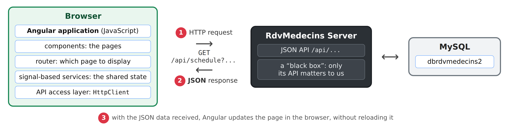
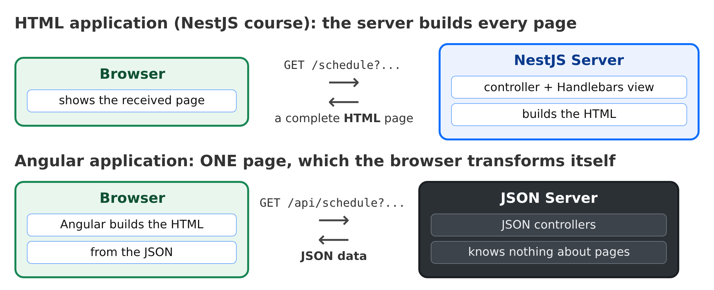

1. 简介
本文档的 PDF 位于此处。
本文档的代码位于此处。
本文档由 Anthropic 的 AI Claude 制作。它承接课程 “NestJS Web 框架循序渐进入门”，并在此基础上转换视角：
- 在课程 [NestJS]中，服务器 生成 HTML 页面（视图引擎 [Handlebars]）；浏览器只负责显示它们；
- 在本课程中，页面是在浏览器中 由一个 [Angular] 应用程序生成的；服务器现在只是一个简单的 JSON 服务器，仅提供数据。
不过，应用程序的页面保持不变：它们就是[RdvMedecins] 应用程序中已通过其他框架展示过的页面（带验证码（CAPTCHA）的登录、医生日程、预约窗口、患者门户、医生与客户管理、账户创建、法语和英语）。
本文档沿用与前几份文档相同的结构：首先是大量简短的示例，每个示例聚焦于 [Angular] 的一个具体概念，随后是一个完整的案例研究——[Angular] 客户端，用于 [RdvMedecins] 应用程序——所有文件都带有注释。它遵循课程 “Vue.js 框架循序渐进入门”的大纲：熟悉 [Vue.js] 的读者会发现相同的示例，只是以 [Angular] 的风格编写。由于 [Angular] 是一个功能更丰富的框架，因此示例更多：25 个，而不是 20 个。
关于这一主题已有一门课程：Angular/NestJS 客户端/服务器示例（2026），它同时涵盖服务器和客户端。本文档的方法有所不同：服务器被视为黑盒，我们只关心其 API 和 JSON，并先[Angular] 循序渐进地学习，然后再着手完整的客户端。
1.1. Angular 在 Web 应用程序中的作用
该应用程序由两部分组成，它们之间仅通过请求进行通信：

- 1：[Angular] 应用程序在浏览器中运行，向服务器发送 HTTP 请求，例如 [GET /api/schedule?doctorId=1&day=2026-10-05]；
- 2：服务器以 JSON 数据响应：该医生当天的日程。它不生成任何页面；
- 3：利用这些数据，[Angular] 在不重新加载页面的情况下更新浏览器中显示的页面。
下图比较了这两种架构：

浏览器在启动时只加载一个几乎为空的 HTML 页面。其余一切都由 [JavaScript] 代码生成：这就是所谓的单页应用 （SPA，即 [Single Page Application]）。当用户点击内部链接时，不会向服务器请求页面：[Angular] 路由器会更改显示的 URL 并替换页面内容。
[Angular] 是 Google 创建的框架。它的第一个版本 [AngularJS] （2010 年）于 2016 年被完全重写：正是这次用 [TypeScript] 完成的重写，如今被简称为 [Angular]，并且每六个月发布一个新的主版本。它基于三个理念：
- 组件：界面被拆分为可复用的部分（导航栏、表单字段、确认窗口等）。组件是一个 [TypeScript] 类，关联一个 HTML 模板和一个 CSS 样式；
- 响应性，基于 信号：组件的数据存储在信号中。当其中一个发生变化时，[Angular] 会自动更新页面中显示它的部分。我们从不编写直接修改页面的代码；
- 依赖注入：组件不会自行创建它们所需的对象（服务器访问、已登录用户、语言等）；它们会请求这些对象，由 [Angular] 提供。这正是 [NestJS] 课程已在服务器端介绍过的机制——[NestJS] 事实上正是受它启发。
与 [Vue.js] 不同，[Angular] 是一个“一体化”框架：路由器、表单、HTTP 客户端、动画和测试均由 [Angular] 团队自己提供，并附带推荐的使用指南。
我们将使用 [Angular] 22 及其最新特性：独立组件（[standalone]）、信号、新的模板语法（[@if]、[@for]）、基于信号的表单，以及不依赖 [zone.js] 的变更检测（[zoneless]），这是 [Angular] 22 的默认行为。
1.2. 所用工具
示例是使用以下工具编写和测试的（其安装方法见附录）：
- [Node.js] 24（或至少 22.22.3：这是 [Angular] 22 的要求）及其包管理器 [npm]；
- 编辑器 [Visual Studio Code]，并安装扩展 [Angular Language Service]；
- 一款较新的浏览器（[Chrome]、[Firefox]、[Edge]），如有可能，安装扩展 [Angular DevTools]；
- 命令行工具 [curl]，用于显示原始 HTTP 响应；
- 数据库管理系统 [MySQL] （或 [MariaDB]），例如 [Laragon] 在 [Windows] 下自带的那个：JSON 服务器需要它，详见介绍该服务器的章节。
所用的库是各个 [package.json] 文件中列出的那些：[Angular] 22.2（核心、路由器、表单、HTTP 客户端）、命令行工具 [Angular CLI] （命令 [ng]）、[RxJS] 7.8（可观察对象）、[ngx-translate] 18（语言）、[TypeScript] 6.0、[Bootstrap] 5.3。
1.3. 示例
文档中的代码被组织到三个文件夹中：
examples 文件夹是 一个 [Angular] 工作区（[workspace]）：它包含二十五个小型应用程序——每个示例一个——它们共享相同的库：
只需安装一次库，在打开到 [examples-angular] 文件夹的控制台中执行（在 [VS Code] 中：终端菜单 / 新建终端）：
然后输入示例的名称来运行它：
这个 [Angular] 开发服务器会编译示例并在 4200 端口提供服务：在 http://localhost:4200/ 打开它。修改文件时无需重启该服务器：每个保存的文件都会立即重新编译，浏览器页面会自动更新。请在控制台中按 [Ctrl-C] 停止它，然后再运行下一个示例（同一时间只有一个示例能占用 4200 端口）。
示例 22 至 25 会查询 [RdvMedecins] JSON 服务器：你需要先安装并运行它，如专门介绍它的章节所述。
1.4. 文档内容
章 | 内容 | 示例 |
入门 | 一个 Angular 工作区、信号、模板、事件、表单（ngModel、信号驱动表单、响应式表单）、验证、管道 | 01–09 |
组件 | 输入、输出、`model()`、内容投影、生命周期、服务与依赖注入、指令、确认对话框 | 10–16 |
路由 | 路由器、导航守卫 | 17 和 18 |
可观察对象与共享状态 | RxJS、信号服务 | 19 和 20 |
国际化 | 法语和英语的应用程序 | 21 |
服务器，一个黑盒 | JSON 服务器的安装、其 API、curl 示例 | - |
与服务器交互 | HttpClient、登录与 Cookie、拦截器、API 访问层、httpResource、服务器错误 | 22 至 25 |
案例研究 | RdvMedecins 应用程序的 Angular 客户端 | - |
部署 | 编译后的客户端，由 JSON 服务器提供服务 | - |
每个示例都附有完整的代码（逐行注释）和运行截图。代码本身也有大量注释：这些注释是课程的一部分。